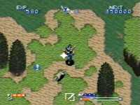

|


Review
Game Type: Overhead-View Adventure
Zelda is a passable comparison for the gameplay. Travel through several
stages in search of items to allow you into the next area. You are sometimes
assisted by one of several NPCs who follows you around, blasting stuff. As
you progress you gain different swords, each of which allows you to do a
different special attack if you charge up for a moment. By the way, yes, it
was published by Square, but another company handled the development so it
really doesn't count.
Gameplay: 80/100
Not too bad but not fantastic. The control is good but there aren't
many situations that demand perfect control. Instead of roaming freely like
in Zelda, you go through a series of stages. Though there are treasures to
find they are merely keys to get past the next obstacle. They don't enhance
gameplay at all. The height of your character is awkward, making it hard to tell
if an enemy is going to hit you or run right by you.
Graphics: 90/100
Not at all cartoony, unlike most other games in this genre. The
landscapes look pretty good. Not a sign of Mode 7 anywhere, but it's not
especially needed. The animations on spells and special attacks are really
flashy. I wish the character and enemy graphics were a bit better animated,
though.
Sound: 70/100
Pretty good music and sound, but not extremely impressive. At least
there's some decent bass in the percussion section.
Overall: 80/100
Merely okay, one to play through once and then leave to collect dust.
Not worth the trouble to import. Besides, it's hard to appreciate the story
if you don't read Japanese (though you will pick up on a couple elements of
it.) It's also a bother inputting those passwords in hiragana or katakana
or whatever it is. Only consider this if you can find it cheap and are
desperate for another Zelda-type game (and have already played Soulblazer).
|